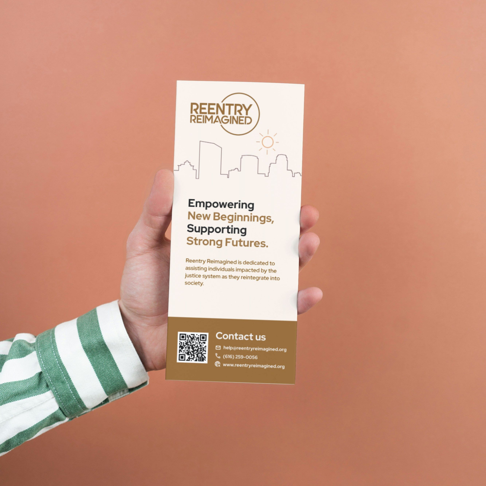
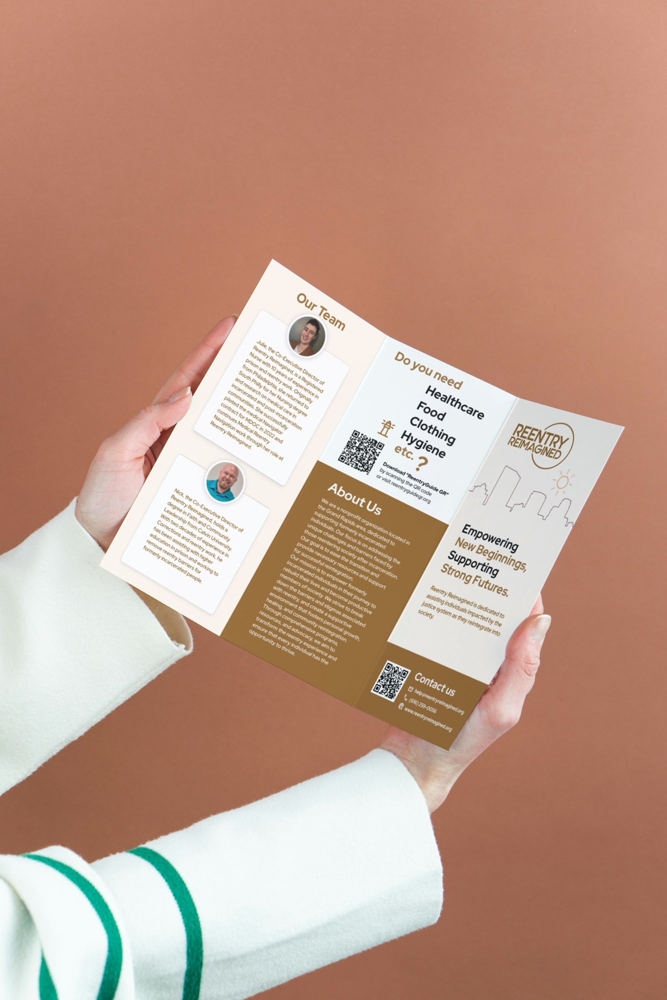
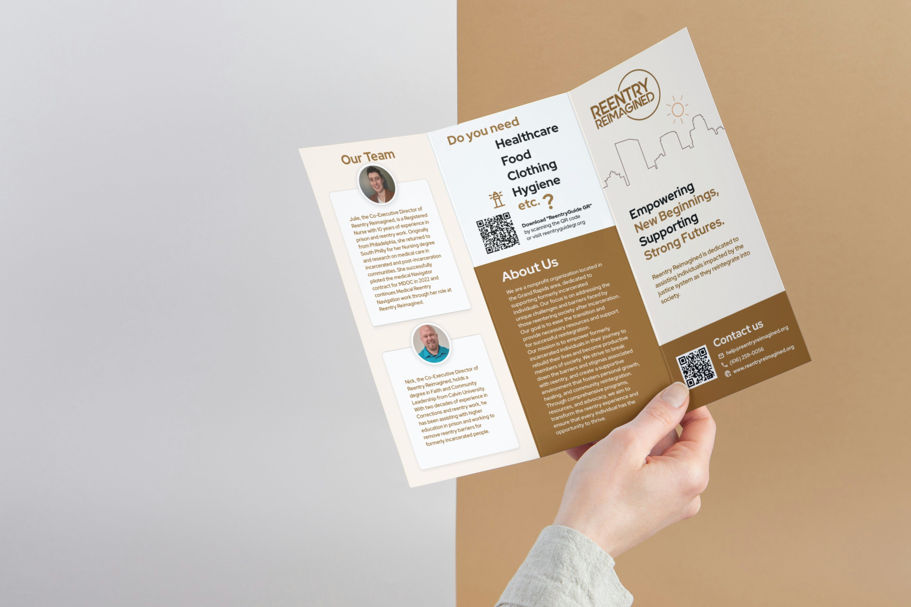

Reentry Reimagined
BROCHURE
DESIGN
Following the website redesign for Reentry Reimagined, the next step was bringing their new visual identity to print through a redesigned brochure.

Target Audience
- Formerly incarcerated individuals seeking support services
- Local non-profits across Michigan for potential collaborations
Design Approach
- Minimum 16px font size for readability
- Text passes contrast requirements
- Matches website branding and style


